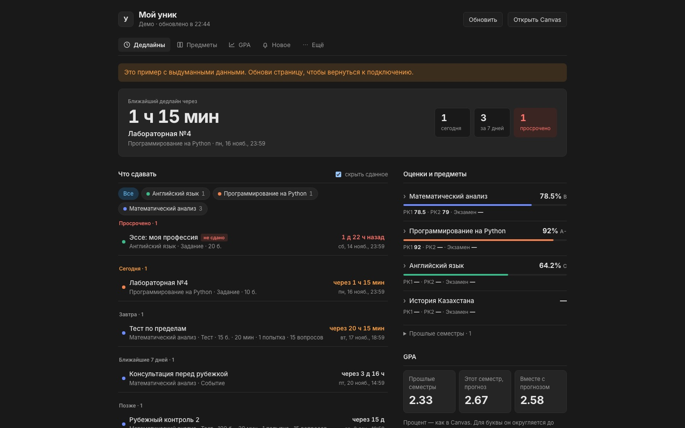

Мой уник инструмент
Своя страница поверх Canvas
Задача. Canvas неудобен в мелочах. Чтобы просто узнать оценку, нужно открыть предмет, найти в меню раздел с оценками, долистать до конца и самому посчитать итог. С дедлайнами так же: горящее задание приходится выискивать среди десятков других.
Страница для студентов университета Туран собирает всё на одном экране: что сдавать и к какому сроку, какие оценки, хватает ли баллов на допуск к сессии и какой выходит GPA. Есть калькулятор «сколько нужно на экзамене» и напоминания в Telegram. Работает на компьютере и телефоне.
Google Apps Script, JavaScript, Canvas API
Вход только по учебной почте, на скриншоте — выдуманные данные.